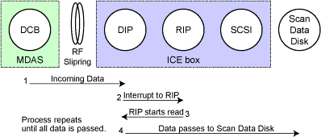

Proprietary to General Electric
Direction 5114043-800, Rev# 9
LightSpeed 3.X Service Methods (Advanced)
Proprietary to General Electric |
Data Flow Description: Taxi transmitted data from the DAS Control Board (DCB) is received by the DAS Interface Processor (DIP) in the ICE box. The data is buffered on the DIP board. As the buffer is filled, the DIP sends an interrupt to the RIP. The RIP board then transfers data through the SCSI to the SDD (Scan Data Disk). The process repeats in a “ping-pong” fashion until all data is moved through the DIP board to the SDD.
For more complete information on the DIP board, refer to the “DAS Interface Processor (DIP)” Section in Scan Reconstruction Unit Theory.
Illustration 1: Scan Data Save - Behavioral Signal and Process Flow Diagram

For a block diagram of the Scan Data Save function, click on the PDF icon, below.
Media File 1: Scan Data Save Block Diagram (GOC1)

Table 1: Scan Data Base Management - Functional Operation & Troubleshooting
| Signal Flow # | Software Function | Associated Errors | FRU(s) Involved |
|---|---|---|---|
| 1 | Incoming Raw Data to the DIP buffer | DIP, RF Ring, DCB | |
| 2 | Interrupt to RIP when DIP Buffer full. | DIP, RIP | |
| 3 | RIP initiates read data out of buffer | RIP, DIP, SCSI, SDD | |
| 4 | Data moved out of buffer to Scan Data Disk. | DIP, RIP, SCSI, SDD | |
Applicable
Diagnostic Coverage:
| |||